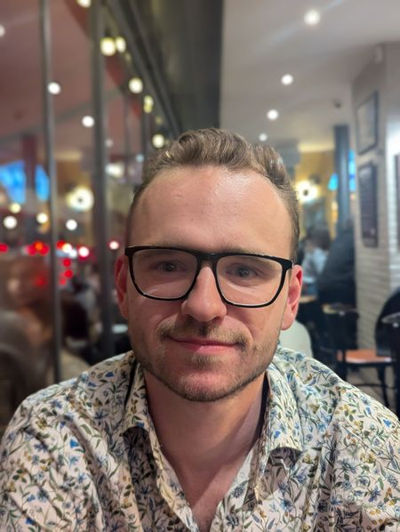

William Ford
PhD student in mathematics — École Polytechnique (CMAP) & LMO Paris-Saclay
About
I am a PhD student in mathematics in Paris, advised by Michael Goldman and Cyril Letrouit. I am based at the Centre de Mathématiques Appliquées at École Polytechnique and the Laboratoire de Mathématiques d'Orsay. I am also a member of the Inria ParMA team and the shape optimisation team at CMAP, École Polytechnique.
My research is in optimal transport. I am currently working on the uniqueness and quantitative stability questions for both the primal and dual optimal transport problems. I have recently released two preprints on this subject, one on the stability and uniqueness of the primal problem and one on the uniqueness of the dual problem; see Research.
Contact: william.ford@polytechnique.edu. Offices: 2A1 at LMO and 2008 at CMAP.
You can find my CV HERE.
Education
- 2025–2028: PhD in Mathematics, École Polytechnique & LMO Paris-Saclay.
- 2024–2025: M2 Mathematics, Optimisation track, Institut Polytechnique de Paris / Paris-Saclay.
- 2020–2024: BSc and MSc Mathematics, Durham University.
Responsibilities
- Co-organiser of the GdT OT-PDE-ML seminar (ParMA team, LMO Paris-Saclay).